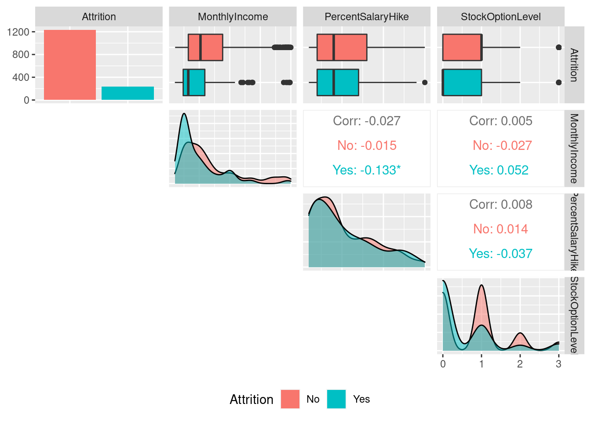
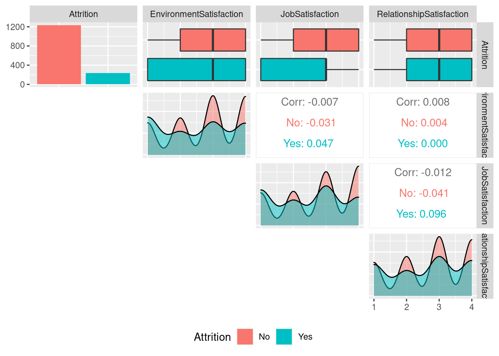
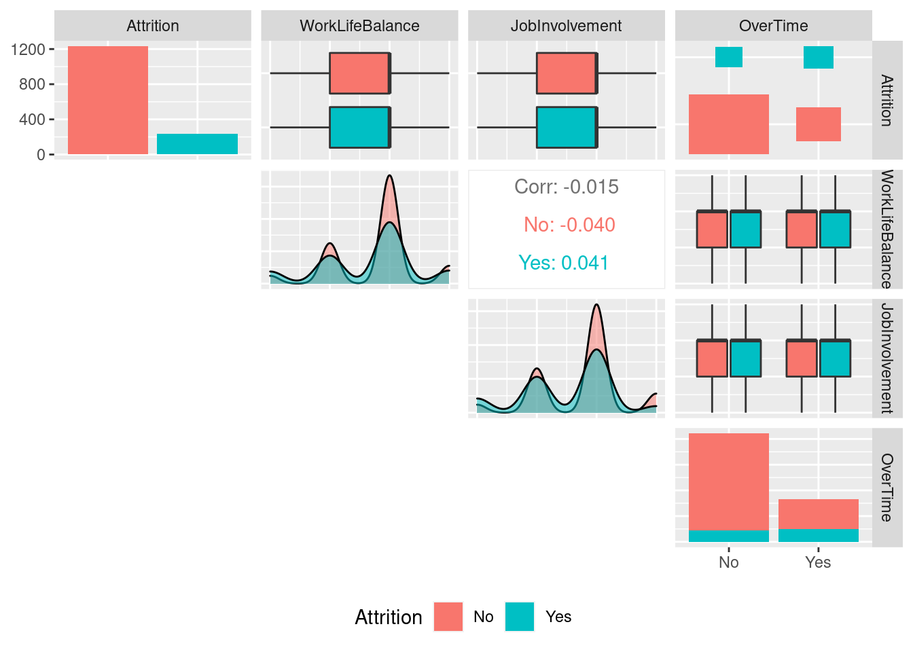
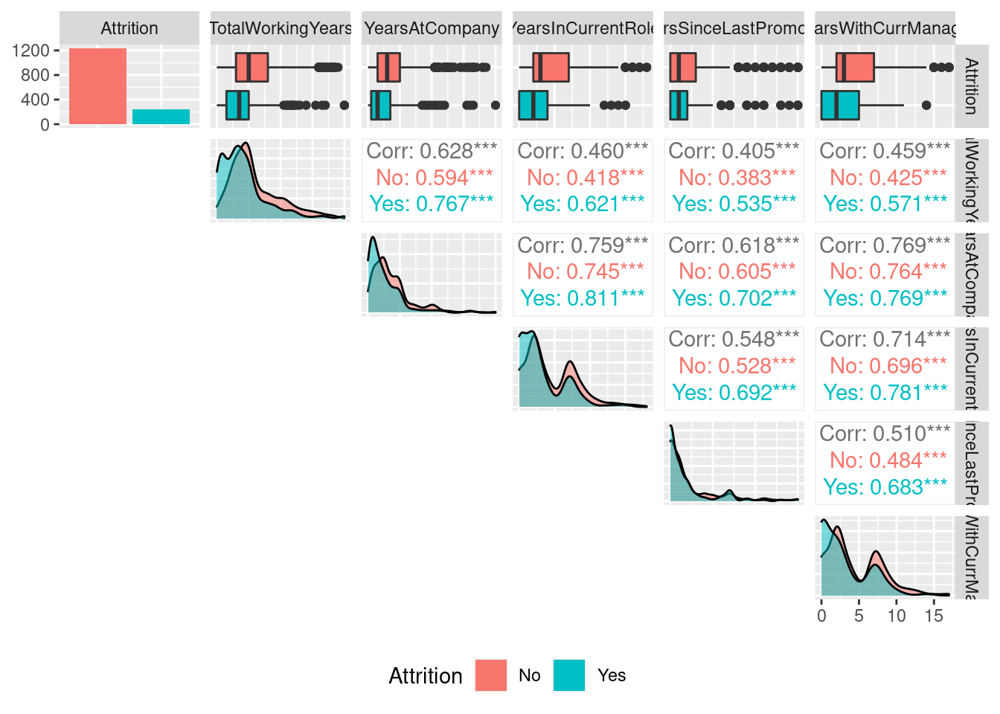

library(GGally)employee_attrition_tbl <- read_csv("new_raw_data/Business Decisions with Machine Learning/datasets-1067-1925-WA_Fn-UseC_-HR-Employee-Attrition.csv")plot_ggpairs <- function(data, color = NULL, density_alpha = 0.5) {
color_expr <- enquo(color)
if (rlang::quo_is_null(color_expr)) {
g <- data %>%
ggpairs(lower = "blank")
} else {
color_name <- quo_name(color_expr)
g <- data %>%
ggpairs(mapping = aes_string(color = color_name),
lower = "blank", legend = 1,
diag = list(continuous = wrap("densityDiag",
alpha = density_alpha))) +
theme(legend.position = "bottom")
}
return(g)
}employee_attrition_tbl %>%
select(Attrition, contains("income"), contains("salary"), contains("stock")) %>%
plot_ggpairs(Attrition)
employee_attrition_tbl %>%
select(Attrition, contains("satisfaction")) %>%
plot_ggpairs(Attrition)
employee_attrition_tbl %>%
select(Attrition, contains("life"), contains("involvement"), contains("overtime")) %>%
plot_ggpairs(Attrition)
employee_attrition_tbl %>%
select(Attrition, contains("years")) %>%
plot_ggpairs(Attrition)
1. What can you deduce about the interaction between Monthly Income and Attrition?
2. What can you deduce about the interaction between Percent Salary Hike and Attrition?
3. What can you deduce about the interaction between Stock Option Level and Attrition?
4. What can you deduce about the interaction between Environment Satisfaction and Attrition?
5. What can you deduce about the interaction between Work Life Balance and Attrition
6. What Can you deduce about the interaction between Job Involvement and Attrition?
7. What can you deduce about the interaction between Over Time and Attrition?
8. What can you deduce about the interaction between Training Times Last Year and Attrition?
9. What can you deduce about the interaction between Years At Company and Attrition?
10. What can you deduce about the interaction between Years Since Last Promotion and Attrition?
library(rsample)
library(h2o)
library(recipes)products_backorders_tbl <- read_csv("new_raw_data/Business Decisions with Machine Learning/product_backorders.csv")set.seed(seed = 1113)
split_obj <-initial_split(products_backorders_tbl, prop = 0.85)
train_readable_tbl <- training(split_obj)
test_readable_tbl<- testing(split_obj)
recipe_obj <- recipe(went_on_backorder ~., data = train_readable_tbl) %>%
step_zv(all_predictors()) %>%
prep()
train_tbl <- bake(recipe_obj, new_data = train_readable_tbl)
test_tbl <- bake(recipe_obj, new_data = test_readable_tbl)h2o.init()## Connection successful!
##
## R is connected to the H2O cluster:
## H2O cluster uptime: 5 hours 38 minutes
## H2O cluster timezone: Europe/Berlin
## H2O data parsing timezone: UTC
## H2O cluster version: 3.36.1.2
## H2O cluster version age: 20 days
## H2O cluster name: H2O_started_from_R_ahmad_uit818
## H2O cluster total nodes: 1
## H2O cluster total memory: 3.82 GB
## H2O cluster total cores: 16
## H2O cluster allowed cores: 16
## H2O cluster healthy: TRUE
## H2O Connection ip: localhost
## H2O Connection port: 54321
## H2O Connection proxy: NA
## H2O Internal Security: FALSE
## R Version: R version 4.2.0 (2022-04-22)split_h2o <- h2o.splitFrame(as.h2o(train_tbl), ratios = c(0.85), seed = 1234)##
|
| | 0%
|
|======================================================================| 100%train_h2o <- split_h2o[[1]]
valid_h2o <- split_h2o[[2]]
test_h2o <- as.h2o(test_tbl)##
|
| | 0%
|
|======================================================================| 100%y <- "went_on_backorder"
x <- setdiff(names(train_h2o), y)
automl_models_h2o <- h2o.automl(
x = x,
y = y,
training_frame = train_h2o,
validation_frame = valid_h2o,
leaderboard_frame = test_h2o,
max_runtime_secs = 30,
nfolds = 5
)##
|
| | 0%
|
|== | 3%
## 19:28:49.808: User specified a validation frame with cross-validation still enabled. Please note that the models will still be validated using cross-validation only, the validation frame will be used to provide purely informative validation metrics on the trained models.
|
|======= | 10%
|
|============ | 17%
|
|================ | 24%
|
|===================== | 30%
|
|========================== | 37%
|
|=============================== | 44%
|
|=================================== | 51%
|
|======================================== | 57%
|
|============================================= | 64%
|
|================================================== | 71%
|
|====================================================== | 78%
|
|=========================================================== | 84%
|
|================================================================ | 91%
|
|==================================================================== | 98%
|
|======================================================================| 100%automl_models_h2o@leaderboard## model_id auc logloss
## 1 StackedEnsemble_BestOfFamily_3_AutoML_2_20220615_192849 0.9522881 0.1700162
## 2 StackedEnsemble_AllModels_2_AutoML_2_20220615_192849 0.9517337 0.1705103
## 3 GBM_3_AutoML_2_20220615_192849 0.9509185 0.1751310
## 4 StackedEnsemble_AllModels_1_AutoML_2_20220615_192849 0.9509115 0.1723812
## 5 StackedEnsemble_BestOfFamily_2_AutoML_2_20220615_192849 0.9508531 0.1733172
## 6 GBM_4_AutoML_2_20220615_192849 0.9494875 0.1773103
## aucpr mean_per_class_error rmse mse
## 1 0.7509463 0.1484686 0.2252442 0.05073493
## 2 0.7531246 0.1276907 0.2257843 0.05097854
## 3 0.7484828 0.1436028 0.2290101 0.05244562
## 4 0.7517061 0.1442607 0.2273846 0.05170376
## 5 0.7429923 0.1300011 0.2280493 0.05200648
## 6 0.7371599 0.1481471 0.2302412 0.05301099
##
## [19 rows x 7 columns]automl_models_h2o@leader## Model Details:
## ==============
##
## H2OBinomialModel: stackedensemble
## Model ID: StackedEnsemble_BestOfFamily_3_AutoML_2_20220615_192849
## Number of Base Models: 6
##
## Base Models (count by algorithm type):
##
## deeplearning drf gbm glm xgboost
## 1 2 1 1 1
##
## Metalearner:
##
## Metalearner algorithm: glm
## Metalearner cross-validation fold assignment:
## Fold assignment scheme: AUTO
## Number of folds: 5
## Fold column: NULL
## Metalearner hyperparameters:
##
##
## H2OBinomialMetrics: stackedensemble
## ** Reported on training data. **
##
## MSE: 0.02784351
## RMSE: 0.1668637
## LogLoss: 0.1012351
## Mean Per-Class Error: 0.08253607
## AUC: 0.9874433
## AUCPR: 0.9301409
## Gini: 0.9748866
##
## Confusion Matrix (vertical: actual; across: predicted) for F1-optimal threshold:
## No Yes Error Rate
## No 8669 152 0.017232 =152/8821
## Yes 178 1026 0.147841 =178/1204
## Totals 8847 1178 0.032918 =330/10025
##
## Maximum Metrics: Maximum metrics at their respective thresholds
## metric threshold value idx
## 1 max f1 0.429450 0.861461 174
## 2 max f2 0.225976 0.880194 239
## 3 max f0point5 0.571933 0.885457 137
## 4 max accuracy 0.451157 0.967282 168
## 5 max precision 0.985802 1.000000 0
## 6 max recall 0.014939 1.000000 362
## 7 max specificity 0.985802 1.000000 0
## 8 max absolute_mcc 0.429450 0.842850 174
## 9 max min_per_class_accuracy 0.207118 0.941860 246
## 10 max mean_per_class_accuracy 0.189316 0.943719 252
## 11 max tns 0.985802 8821.000000 0
## 12 max fns 0.985802 1201.000000 0
## 13 max fps 0.000255 8821.000000 399
## 14 max tps 0.014939 1204.000000 362
## 15 max tnr 0.985802 1.000000 0
## 16 max fnr 0.985802 0.997508 0
## 17 max fpr 0.000255 1.000000 399
## 18 max tpr 0.014939 1.000000 362
##
## Gains/Lift Table: Extract with `h2o.gainsLift(<model>, <data>)` or `h2o.gainsLift(<model>, valid=<T/F>, xval=<T/F>)`
## H2OBinomialMetrics: stackedensemble
## ** Reported on validation data. **
##
## MSE: 0.04705696
## RMSE: 0.2169262
## LogLoss: 0.1596484
## Mean Per-Class Error: 0.1413438
## AUC: 0.955847
## AUCPR: 0.7906689
## Gini: 0.911694
##
## Confusion Matrix (vertical: actual; across: predicted) for F1-optimal threshold:
## No Yes Error Rate
## No 2013 91 0.043251 =91/2104
## Yes 68 216 0.239437 =68/284
## Totals 2081 307 0.066583 =159/2388
##
## Maximum Metrics: Maximum metrics at their respective thresholds
## metric threshold value idx
## 1 max f1 0.316882 0.730964 182
## 2 max f2 0.141775 0.803738 258
## 3 max f0point5 0.469554 0.762097 140
## 4 max accuracy 0.469554 0.939280 140
## 5 max precision 0.977540 1.000000 0
## 6 max recall 0.002174 1.000000 391
## 7 max specificity 0.977540 1.000000 0
## 8 max absolute_mcc 0.425578 0.693968 150
## 9 max min_per_class_accuracy 0.143991 0.901616 256
## 10 max mean_per_class_accuracy 0.141775 0.904083 258
## 11 max tns 0.977540 2104.000000 0
## 12 max fns 0.977540 282.000000 0
## 13 max fps 0.000114 2104.000000 399
## 14 max tps 0.002174 284.000000 391
## 15 max tnr 0.977540 1.000000 0
## 16 max fnr 0.977540 0.992958 0
## 17 max fpr 0.000114 1.000000 399
## 18 max tpr 0.002174 1.000000 391
##
## Gains/Lift Table: Extract with `h2o.gainsLift(<model>, <data>)` or `h2o.gainsLift(<model>, valid=<T/F>, xval=<T/F>)`
## H2OBinomialMetrics: stackedensemble
## ** Reported on cross-validation data. **
## ** 5-fold cross-validation on training data (Metrics computed for combined holdout predictions) **
##
## MSE: 0.04911817
## RMSE: 0.2216262
## LogLoss: 0.1652946
## Mean Per-Class Error: 0.1542084
## AUC: 0.9551118
## AUCPR: 0.7543865
## Gini: 0.9102237
##
## Confusion Matrix (vertical: actual; across: predicted) for F1-optimal threshold:
## No Yes Error Rate
## No 11655 514 0.042238 =514/12169
## Yes 436 1202 0.266178 =436/1638
## Totals 12091 1716 0.068806 =950/13807
##
## Maximum Metrics: Maximum metrics at their respective thresholds
## metric threshold value idx
## 1 max f1 0.384899 0.716756 190
## 2 max f2 0.152380 0.786290 273
## 3 max f0point5 0.573631 0.740741 132
## 4 max accuracy 0.467759 0.933367 165
## 5 max precision 0.975088 0.952381 3
## 6 max recall 0.000306 1.000000 399
## 7 max specificity 0.988867 0.999918 0
## 8 max absolute_mcc 0.384899 0.677859 190
## 9 max min_per_class_accuracy 0.130717 0.890720 282
## 10 max mean_per_class_accuracy 0.139944 0.892638 278
## 11 max tns 0.988867 12168.000000 0
## 12 max fns 0.988867 1637.000000 0
## 13 max fps 0.000306 12169.000000 399
## 14 max tps 0.000306 1638.000000 399
## 15 max tnr 0.988867 0.999918 0
## 16 max fnr 0.988867 0.999389 0
## 17 max fpr 0.000306 1.000000 399
## 18 max tpr 0.000306 1.000000 399
##
## Gains/Lift Table: Extract with `h2o.gainsLift(<model>, <data>)` or `h2o.gainsLift(<model>, valid=<T/F>, xval=<T/F>)`
## Cross-Validation Metrics Summary:
## mean sd cv_1_valid cv_2_valid cv_3_valid cv_4_valid
## accuracy 0.931982 0.008025 0.921971 0.925187 0.938923 0.934235
## auc 0.955240 0.005012 0.954931 0.947286 0.959643 0.954899
## err 0.068018 0.008025 0.078029 0.074813 0.061077 0.065765
## err_count 188.000000 24.114311 217.000000 210.000000 169.000000 180.000000
## f0point5 0.710442 0.039979 0.658758 0.679363 0.749842 0.720641
## cv_5_valid
## accuracy 0.939595
## auc 0.959439
## err 0.060405
## err_count 164.000000
## f0point5 0.743605
##
## ---
## mean sd cv_1_valid cv_2_valid cv_3_valid
## precision 0.702007 0.051795 0.630435 0.669468 0.757962
## r2 0.530485 0.025538 0.508732 0.501623 0.563048
## recall 0.751759 0.035116 0.803077 0.722054 0.719033
## residual_deviance 911.378900 44.759113 929.978940 977.768070 872.254400
## rmse 0.221489 0.005195 0.225172 0.227681 0.214516
## specificity 0.956275 0.011954 0.937704 0.952342 0.968801
## cv_4_valid cv_5_valid
## precision 0.714706 0.737463
## r2 0.533217 0.545805
## recall 0.745399 0.769231
## residual_deviance 906.852000 870.041100
## rmse 0.221304 0.218772
## specificity 0.959768 0.962762predictions <- h2o.predict(automl_models_h2o@leader, newdata = as.h2o(test_tbl))##
|
| | 0%
|
|======================================================================| 100%
##
|
| | 0%
|
|======================================================================| 100%predictions_tbl <- predictions %>% as_tibble()
predictions_tbl %>% head()automl_models_h2o@leader %>% h2o.saveModel(path = "src/ch6/h20_models/")## [1] "/home/ahmad/Documents/TUHH/Semester 2/Business Decisions with Machine Learning/bdml-AhmadSaigol/src/ch6/h20_models/StackedEnsemble_BestOfFamily_3_AutoML_2_20220615_192849"